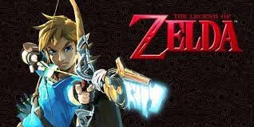
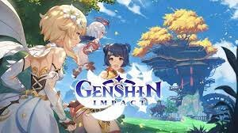

zelda trilogia
The Legend of Zelda (ゼルダの伝説 Zeruda no Densetsu) é uma série de jogos eletrônicos da Nintendo criada em 1986 por Shigeru Miyamoto e Takashi Tezuka. É centrado em jogos eletrônicos de ação e aventura e alguns elementos de RPG.
Plataformas: Lista: Family Computer Disk Syst...
Último título: The Legend of Zelda: Skyward S...
Primeiro título: The Legend of Zelda; 21 de fev...
Criador(es): Shigeru Miyamoto; Takashi Tezuka

genshin impact
O jogo apresenta um ambiente de mundo aberto de fantasia e sistema de batalha baseado em ação usando Pontos de energia elemental e troca de personagem, e usa a monetização de jogo gacha para os jogadores obterem novos personagens, armas e outros recursos.
